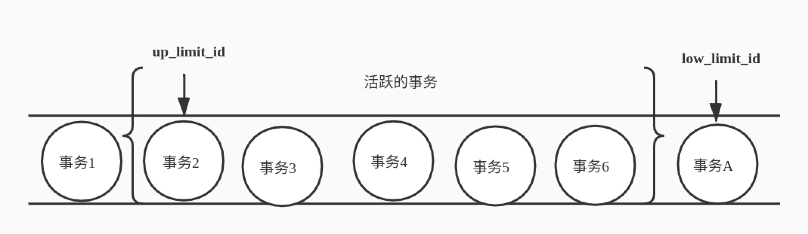

MySQL事务
事务就是要保证一组数据库操作，要么全部成功，要么全部失败。在 MySQL 中，事务支持是在引擎层实现的。你现在知道，MySQL 是一个支持多引擎的系统，但并不是所有的引擎都支持事务。比如 MySQL 原生的 MyISAM引擎就不支持事务，这也是 MyISAM 被 InnoDB 取代的重要原因之一。
四大特性（ACID）
原子性（Atomicity）
定义
一个事务（transaction）中的所有操作，要么全部完成，要么全部不完成，不会结束在中间某个环节。事务在执行过程中发生错误，会被回滚（Rollback）到事务开始前的状态，就像这个事务从来没有执行过一样。
简单说就是：一个事务要么完成要么失败
原理
InnoDB存储引擎提供了undo log(回滚日志)，在undo log中保存了和执行操作相反的记录，如果事务执行失败则会执行rollback，这时就需要使用到undo log中的日志记录。例：写入2个insert，那就会记录下对应的2个delete
什么时候删除回滚日志？在不需要的时候才删除。也就是说，系统会判断，当没有事务再需要用到这些回滚日志时，回滚日志会被删除。就是当系统里没有比这个回滚日志更早的 read-view的时候。
一致性（Consistency）
在事务开始之前和事务结束以后，数据库的完整性没有被破坏。这表示写入的资料必须完全符合所有的预设规则，这包含资料的精确度、串联性以及后续数据库可以自发性地完成预定的工作
持久性（Durability）
定义
事务处理结束后，对数据的修改就是永久的，即便系统故障也不会丢失
原理
数据存放在磁盘，每次都需要从磁盘读取数据，效率很低，所以innoDB提供了缓存，每次写入数据都是先写入缓存中，缓存中的数据会定时刷新磁盘。
这样就带来了一个问题，数据写入缓存后，服务器宕机了怎么办，数据是不是就丢失了？
要真数据丢失了，就没人用mysql了吧，每次写入时先写入redo log再写入缓存。就算宕机了，也可以从redo log中恢复数据，再更新缓存，保证了数据的持久性。
隔离性（Isolation）
定义
当数据库上有多个事务同时执行的时候，就可能出现脏读（dirty read 读到其他事物未提交的数据）、不可重复读（non-repeatable read 前后读取的数据不一致）、幻读（phantom read 前后读取的数量不一致）的问题，为了解决这些问题，就有了“隔离级别”的概念。
隔离性追求的是并发情形下事务之间互不干扰。
关于脏读、不可重复读、幻读
- 脏读：当前事务(A)中可以读到其他事务(B)未提交的数据
| 时间 | 事务A | 事务B |
|---|---|---|
| T1 | 开始 | 开始 |
| T2 | 查询张三数学分数60 | |
| T3 | 修改张三数学分数为65 | |
| T4 | 查询张三数学分数65 | |
| T5 | 提交事务 |
我们可以清楚的看见事务B在T5时刻在提交，事务A却在T4时已经读到事务B提交的内容了
- 不可重复读：在事务A中先后两次读取同一个数据，两次读取的结果不一样
| 时间 | 事务A | 事务B |
|---|---|---|
| T1 | 开始 | 开始 |
| T2 | 查询张三数学分数60 | |
| T3 | 修改张三数学分数为65 | |
| T4 | 提交事务 | |
| T5 | 查询张三数学分数65 | - |
可以清楚看见，事务A在两次读取张三的数学分数，取得的结果是不同的。不可重复读与脏读的区别前者为提交后读取的数据不同，后者为未提交读取的数据不同。
- 幻读：在事务A中按照某个条件先后两次查询数据库，两次查询结果的条数不同
| 时间 | 事务A | 事务B |
|---|---|---|
| T1 | 开始 | 开始 |
| T2 | 查询张三小于60的科目：数学 | |
| T3 | 插入张三英语成绩，59 | |
| T4 | 提交事务 | |
| T5 | 查询张三小于60的科目：数学、英语 | - |
在前后两次查询中，取到的数据条数是不同，幻读与不可重复读前者是查询出的记录条数不同，后者则是查询单条记录不同。不可重复读与幻读的区别可以通俗的理解为：前者是数据变了，后者是数据的行数变了。
隔离级别
首先明确一点，隔离级别越高，效率就会越低。
- 读未提交是指，一个事务还没提交时，它做的变更就能被别的事务看到。
- 读提交是指，一个事务提交之后，它做的变更才会被其他事务看到。
- 可重复读是指，一个事务执行过程中看到的数据，总是跟这个事务在启动时看到的数据是一致的。当然在可重复读隔离级别下，未提交变更对其他事务也是不可见的。
- 串行化，顾名思义是对于同一行记录，“写”会加“写锁”，“读”会加“读锁”。当出现读写锁冲突的时候，后访问的事务必须等前一个事务执行完成，才能继续执行。
各个隔离级别存在的问题
| 隔离级别 | 问题 |
|---|---|
| 读未提交 | 脏读、不可重复读和幻读 |
| 读提交 | 不可重复读和幻读 |
| 可重复读 | 幻读 |
| 串行化 | 没问题 |
实现
在实现上，数据库里面会创建一个视图，访问的时候以视图的逻辑结果为准。在“可重复读”隔离级别下，这个视图是在事务启动时创建的，整个事务存在期间都用这个视图。在“读提交”隔离级别下，这个视图是在每个 SQL 语句开始执行的时候创建的。这里需要注意的是，“读未提交”隔离级别下直接返回记录上的最新值，没有视图概念；而“串行化”隔离级别下直接用加锁的方式来避免并行访问。
默认隔离级别
Oracle : 读提交
MySQL : 可重复读
因此对于一些从 Oracle 迁移到 MySQL 的应用，为保证数据库隔离级别的一致，要记得将 MySQL 的隔离级别设置为“读提交”
MySQL可以这样查看隔离级别
1 | show variables like 'transaction_isolation'; |
MVCC
可重复读解决脏读、不可重复读、幻读等问题，使用的是MVCC：MVCC全称Multi-Version Concurrency Control，即多版本的并发控制协议。
MVCC最大的优点是读不加锁，因此读写不冲突，并发性能好。InnoDB实现MVCC，多个版本的数据可以共存，主要基于以下技术及数据结构：
- 隐藏列：InnoDB中每行数据都有隐藏列，隐藏列中包含了本行数据的事务id、指向
undo log的指针等。 - 基于undo log的版本链：前面说到每行数据的隐藏列中包含了指向undo log的指针，而每条undo log也会指向更早版本的undo log，从而形成一条版本链。
- ReadView：通过隐藏列和版本链，MySQL可以将数据恢复到指定版本；但是具体要恢复到哪个版本，则需要根据ReadView来确定。所谓ReadView，是指事务在某一时刻给整个事务系统（
trx_sys）打快照，之后再进行读操作时，会将读取到的数据中的事务id与trx_sys快照比较，从而判断数据对该ReadView是否可见，即对事务A是否可见。
trx_sys中的主要内容，以及判断可见性的方法如下：
- low_limit_id：表示生成ReadView时系统中应该分配给下一个事务的id。如果数据的事务id大于等于
low_limit_id，说明该事务还没执行，则对该ReadView不可见。 - up_limit_id：表示生成ReadView时当前系统中活跃的读写事务中最小的事务id。如果数据的事务id小于
up_limit_id，说明该事务已经执行完成，则对该ReadView可见。 - rw_trx_ids：表示生成ReadView时当前系统中活跃的读写事务的事务id列表。如果数据的事务id在
low_limit_id和up_limit_id之间，则需要判断事务id是否在rw_trx_ids中：如果在，说明生成ReadView时事务仍在活跃中，因此数据对ReadView不可见；如果不在，说明生成ReadView时事务已经提交了，因此数据对ReadView可见。如下
